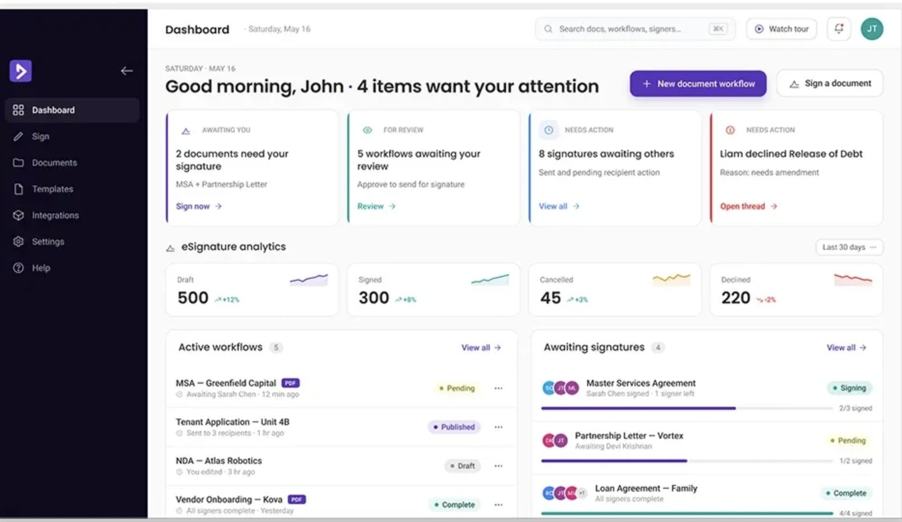
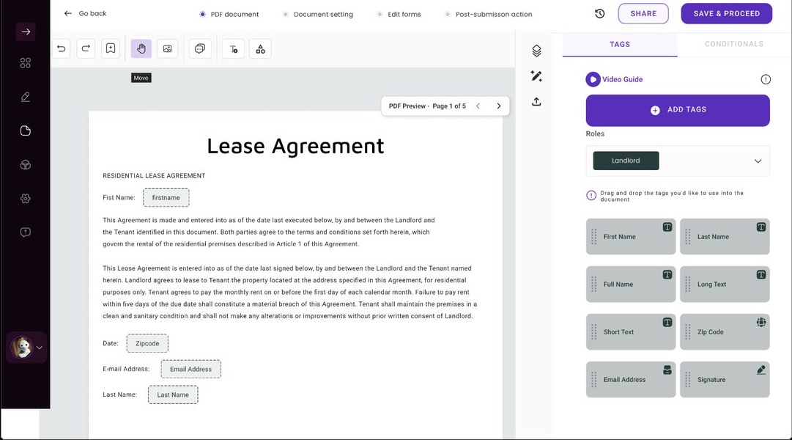
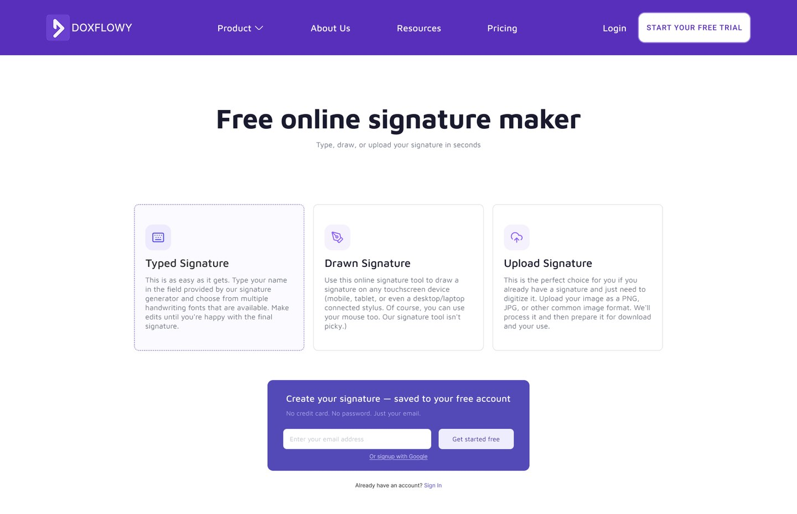
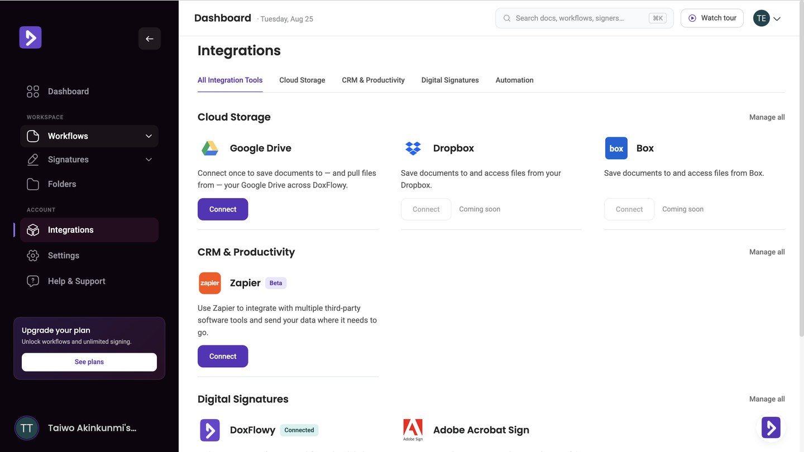
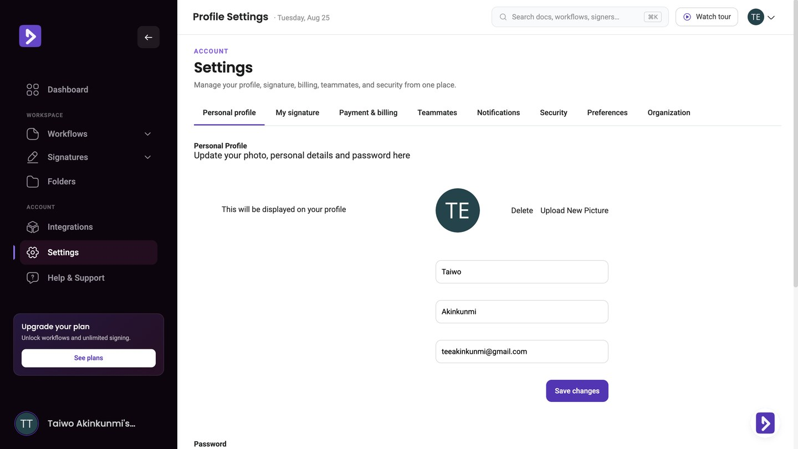

Doxflowy
Doxflowy lets businesses create, automate and e-sign documents, in a market led by giants like DocuSign. Thousands of people came for its free templates and left without signing up.
- Company
- Useful Media
- Role
- Product design
- Platforms
- B2B SaaS · Web
- Result
- Sign-ups up 42%. Rage taps down 31%.

A document automation and e-signature platform where thousands of visitors downloaded free templates and left without signing up.
I ran monthly UX audits with the founders using Microsoft Clarity, then redesigned the template pages, the document editor and the loading experience around what the data showed.
What needs your attention first: documents to sign, workflows to review, signatures pending.

Drag-and-drop fields tied to signer roles, so one template sends the right fields to the right person.

E-signature

Integrations and settings


Sign-ups up 42%. Rage taps down 31%.
Session duration rose 27%.
Measured in Microsoft Clarity across the web app and marketing site, March to August 2026.